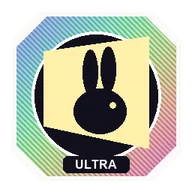
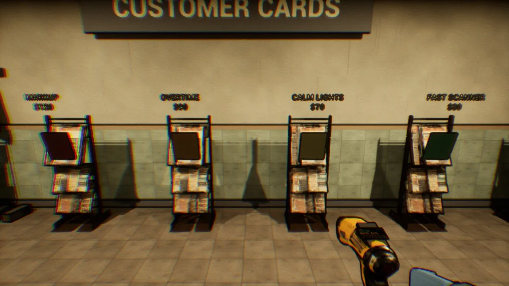

Kit de imprensa
Tudo o que você precisa para escrever, transmitir ou falar sobre Night Stocktake. Todos os arquivos podem ser usados livremente em matérias e vídeos.
Os fatos
LOJA #0412
Até quatro funcionários do turno da noite fazem o inventário de um hipermercado que se reorganiza quando ninguém está olhando. Escaneie, carregue, entregue a meta - e saia às seis.

Sobre o jogo
Night Stocktake é um jogo de terror co-op sobre o pior turno da noite do varejo. Bata o ponto com até três amigos, pegue um scanner e um carrinho e conte tudo num hipermercado que não fica parado: luzes piscam, prateleiras se reorganizam, seções trocam de lugar no instante em que ninguém está olhando. O mapa do seu tablet é um retrato que logo fica vencido.
Seis coisas trabalham à noite com você - manequins que só se movem quando ninguém vê, um livro que morde, um cliente perto de quem você não pode escanear, uma empilhadeira que nunca freia, uma caixa que escaneia quem ficar na fila dela e um segurança que confere crachás. Bata a meta, bata o ponto às seis e gaste seu salário em cartões de cliente, adesivos, cabeças, chapéus e skins de scanner.
Principais recursos
- Turnos da noite em co-op online para 1-4 jogadores
- Uma loja que se reorganiza quando ninguém está olhando
- Física: carrinhos bambos, produtos que caem, geladeiras para duas pessoas
- Seis ameaças que caçam pelo barulho, cada uma do seu jeito
- 85 adesivos de conquista para o seu crachá e a sua cabeça de caixa
- Personalização da cabeça de caixa: cabeças, chapéus, sapatos, rostos, skins de scanner, armários
Faça live. Monetize.
- Você pode transmitir, gravar e publicar vídeos de Night Stocktake no YouTube, Twitch, TikTok, Kick e em qualquer outra plataforma.
- Você pode monetizar esses vídeos e transmissões (anúncios, inscrições, patrocínios, programas de parceria). Não é preciso permissão nem licença por escrito.
- As músicas e os efeitos sonoros do jogo não estão registrados no Content ID. Se você receber uma reivindicação em um vídeo de Night Stocktake, avise a gente e vamos ajudar a liberá-lo.
- Você pode usar os logos, a key art e as capturas de tela desta página em miniaturas e matérias.
- Por favor, não dê a entender que seu conteúdo é feito, patrocinado ou endossado pela StaleMilk Games, a menos que seja.
- Um link para o jogo na sua descrição é bem-vindo, mas não obrigatório.
Podemos atualizar esta política; vale a versão publicada nesta página.

Logos, key art, capturas de tela
Clique para abrir em tamanho real. Tudo (em PNG) está no presskit.zip.
 Key art
Key art Key art, sem logo
Key art, sem logo Card para redes sociais 1200×630
Card para redes sociais 1200×630





 Manequim
Manequim Cliente
Cliente Empilhadeira
Empilhadeira Caixa
Caixa Segurança
Segurança